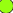

<!doctype html>
<html lang="en">
    <head>
        <meta charset="utf-8">
        <meta http-equiv="X-UA-Compatible" content="IE=edge">
        <meta name="viewport" content="initial-scale=1,user-scalable=no,maximum-scale=1,width=device-width">
        <meta name="mobile-web-app-capable" content="yes">
        <meta name="apple-mobile-web-app-capable" content="yes">
        <link rel="stylesheet" href="css/leaflet.css">
        <link rel="stylesheet" href="css/L.Control.Layers.Tree.css">
        <link rel="stylesheet" href="css/qgis2web.css">
        <link rel="stylesheet" href="css/fontawesome-all.min.css">
        <link rel="stylesheet" href="css/filter.css">
<link rel="stylesheet" href="css/nouislider.min.css">
        <link rel="stylesheet" href="css/leaflet-control-geocoder.Geocoder.css">
        <style>
        #map {
            width: 2651px;
            height: 2099px;
        }
        </style>
        <title></title>
    </head>
    <body>
        <div id="map">
        </div>
        <script src="js/qgis2web_expressions.js"></script>
        <script src="js/leaflet.js"></script>
        <script src="js/L.Control.Layers.Tree.min.js"></script>
        <script src="js/leaflet.rotatedMarker.js"></script>
        <script src="js/leaflet.pattern.js"></script>
        <script src="js/leaflet-hash.js"></script>
        <script src="js/Autolinker.min.js"></script>
        <script src="js/rbush.min.js"></script>
        <script src="js/labelgun.min.js"></script>
        <script src="js/labels.js"></script>
        <script src="js/leaflet-control-geocoder.Geocoder.js"></script>
        <script src="js/tailDT.js"></script>
<script src="js/nouislider.min.js"></script>
<script src="js/wNumb.js"></script>
        <script src="data/voorzieningsgebied_oasen_1.js"></script>
        <script src="data/Zakbakens_2.js"></script>
        <script>
        var map = L.map('map', {
            zoomControl:true, maxZoom:28, minZoom:1
        })
        var hash = new L.Hash(map);
        map.attributionControl.setPrefix('<a href="https://github.com/tomchadwin/qgis2web" target="_blank">qgis2web</a> &middot; <a href="https://leafletjs.com" title="A JS library for interactive maps">Leaflet</a> &middot; <a href="https://qgis.org">QGIS</a>');
        var autolinker = new Autolinker({truncate: {length: 30, location: 'smart'}});
        function removeEmptyRowsFromPopupContent(content, feature) {
         var tempDiv = document.createElement('div');
         tempDiv.innerHTML = content;
         var rows = tempDiv.querySelectorAll('tr');
         for (var i = 0; i < rows.length; i++) {
             var td = rows[i].querySelector('td.visible-with-data');
             var key = td ? td.id : '';
             if (td && td.classList.contains('visible-with-data') && feature.properties[key] == null) {
                 rows[i].parentNode.removeChild(rows[i]);
             }
         }
         return tempDiv.innerHTML;
        }
        document.querySelector(".leaflet-popup-pane").addEventListener("load", function(event) {
          var tagName = event.target.tagName,
            popup = map._popup;
          // Also check if flag is already set.
          if (tagName === "IMG" && popup && !popup._updated) {
            popup._updated = true; // Set flag to prevent looping.
            popup.update();
          }
        }, true);
        var bounds_group = new L.featureGroup([]);
        function setBounds() {
            if (bounds_group.getLayers().length) {
                map.fitBounds(bounds_group.getBounds());
            }
        }
        map.createPane('pane_OpenStreetMap_0');
        map.getPane('pane_OpenStreetMap_0').style.zIndex = 400;
        var layer_OpenStreetMap_0 = L.tileLayer('https://tile.openstreetmap.org/{z}/{x}/{y}.png', {
            pane: 'pane_OpenStreetMap_0',
            opacity: 1.0,
            attribution: '',
            minZoom: 1,
            maxZoom: 28,
            minNativeZoom: 0,
            maxNativeZoom: 19
        });
        layer_OpenStreetMap_0;
        map.addLayer(layer_OpenStreetMap_0);
        function pop_voorzieningsgebied_oasen_1(feature, layer) {
            var popupContent = '<table>\
                    <tr>\
                        <td colspan="2">' + (feature.properties['OBJECTID'] !== null ? autolinker.link(feature.properties['OBJECTID'].toLocaleString()) : '') + '</td>\
                    </tr>\
                    <tr>\
                        <td colspan="2">' + (feature.properties['WLB'] !== null ? autolinker.link(feature.properties['WLB'].toLocaleString()) : '') + '</td>\
                    </tr>\
                    <tr>\
                        <td colspan="2">' + (feature.properties['Shape_Leng'] !== null ? autolinker.link(feature.properties['Shape_Leng'].toLocaleString()) : '') + '</td>\
                    </tr>\
                    <tr>\
                        <td colspan="2">' + (feature.properties['Shape_Area'] !== null ? autolinker.link(feature.properties['Shape_Area'].toLocaleString()) : '') + '</td>\
                    </tr>\
                </table>';
            layer.bindPopup(popupContent, {maxHeight: 400});
            var popup = layer.getPopup();
            var content = popup.getContent();
            var updatedContent = removeEmptyRowsFromPopupContent(content, feature);
            popup.setContent(updatedContent);
        }

        function style_voorzieningsgebied_oasen_1_0() {
            return {
                pane: 'pane_voorzieningsgebied_oasen_1',
                opacity: 1,
                color: 'rgba(4,9,4,1.0)',
                dashArray: '',
                lineCap: 'square',
                lineJoin: 'bevel',
                weight: 4.0,
                fillOpacity: 0,
                interactive: false,
            }
        }
        map.createPane('pane_voorzieningsgebied_oasen_1');
        map.getPane('pane_voorzieningsgebied_oasen_1').style.zIndex = 401;
        map.getPane('pane_voorzieningsgebied_oasen_1').style['mix-blend-mode'] = 'normal';
        var layer_voorzieningsgebied_oasen_1 = new L.geoJson(json_voorzieningsgebied_oasen_1, {
            attribution: '',
            interactive: false,
            dataVar: 'json_voorzieningsgebied_oasen_1',
            layerName: 'layer_voorzieningsgebied_oasen_1',
            pane: 'pane_voorzieningsgebied_oasen_1',
            onEachFeature: pop_voorzieningsgebied_oasen_1,
            style: style_voorzieningsgebied_oasen_1_0,
        });
        bounds_group.addLayer(layer_voorzieningsgebied_oasen_1);
        map.addLayer(layer_voorzieningsgebied_oasen_1);
        function pop_Zakbakens_2(feature, layer) {
            var popupContent = '<table>\
                    <tr>\
                        <td colspan="2"><strong>Code</strong><br />' + (feature.properties['Code'] !== null ? autolinker.link(feature.properties['Code'].toLocaleString()) : '') + '</td>\
                    </tr>\
                    <tr>\
                        <th scope="row">RPS</th>\
                        <td class="visible-with-data" id="RPS">' + (feature.properties['RPS'] !== null ? autolinker.link(feature.properties['RPS'].toLocaleString()) : '') + '</td>\
                    </tr>\
                    <tr>\
                        <th scope="row">Diagis</th>\
                        <td class="visible-with-data" id="Diagis">' + (feature.properties['Diagis'] !== null ? autolinker.link(feature.properties['Diagis'].toLocaleString()) : '') + '</td>\
                    </tr>\
                    <tr>\
                        <th scope="row">Actief?</th>\
                        <td class="visible-with-data" id="Actief?">' + (feature.properties['Actief?'] !== null ? autolinker.link(feature.properties['Actief?'].toLocaleString()) : '') + '</td>\
                    </tr>\
                    <tr>\
                        <th scope="row">Actiecode</th>\
                        <td class="visible-with-data" id="Actiecode">' + (feature.properties['Actiecode'] !== null ? autolinker.link(feature.properties['Actiecode'].toLocaleString()) : '') + '</td>\
                    </tr>\
                </table>';
            layer.bindPopup(popupContent, {maxHeight: 400});
            var popup = layer.getPopup();
            var content = popup.getContent();
            var updatedContent = removeEmptyRowsFromPopupContent(content, feature);
            popup.setContent(updatedContent);
        }
        function style_Zakbakens_2_0(feature) {
            var context = {
                feature: feature,
                variables: {}
            };
            // Start of if blocks and style check logic
            if (exp_Zakbakens_2rule0_eval_expression(context)) {
                  return {
                pane: 'pane_Zakbakens_2',
                radius: 4.0,
                opacity: 1,
                color: 'rgba(35,35,35,1.0)',
                dashArray: '',
                lineCap: 'butt',
                lineJoin: 'miter',
                weight: 1,
                fill: true,
                fillOpacity: 1,
                fillColor: 'rgba(151,255,17,1.0)',
                interactive: true,
            };
                }
                else if (exp_Zakbakens_2rule1_eval_expression(context)) {
                  return {
                pane: 'pane_Zakbakens_2',
                radius: 4.0,
                opacity: 1,
                color: 'rgba(35,35,35,1.0)',
                dashArray: '',
                lineCap: 'butt',
                lineJoin: 'miter',
                weight: 1,
                fill: true,
                fillOpacity: 1,
                fillColor: 'rgba(213,180,60,1.0)',
                interactive: true,
            };
                }
            else {
                return {fill: false, stroke: false};
            }
        }
        map.createPane('pane_Zakbakens_2');
        map.getPane('pane_Zakbakens_2').style.zIndex = 402;
        map.getPane('pane_Zakbakens_2').style['mix-blend-mode'] = 'normal';
        var layer_Zakbakens_2 = new L.geoJson(json_Zakbakens_2, {
            attribution: '',
            interactive: true,
            dataVar: 'json_Zakbakens_2',
            layerName: 'layer_Zakbakens_2',
            pane: 'pane_Zakbakens_2',
            onEachFeature: pop_Zakbakens_2,
            pointToLayer: function (feature, latlng) {
                var context = {
                    feature: feature,
                    variables: {}
                };
                return L.circleMarker(latlng, style_Zakbakens_2_0(feature));
            },
        });
        bounds_group.addLayer(layer_Zakbakens_2);
        map.addLayer(layer_Zakbakens_2);
        var osmGeocoder = new L.Control.Geocoder({
            collapsed: true,
            position: 'topleft',
            text: 'Search',
            title: 'Testing'
        }).addTo(map);
        document.getElementsByClassName('leaflet-control-geocoder-icon')[0]
        .className += ' fa fa-search';
        document.getElementsByClassName('leaflet-control-geocoder-icon')[0]
        .title += 'Search for a place';
        var baseMaps = {};
        var overlaysTree = [
            {label: 'Zakbakens<br /><table><tr><td style="text-align: center;"></td><td>Actief</td></tr><tr><td style="text-align: center;"></td><td>Inactief</td></tr></table>', layer: layer_Zakbakens_2},
            {label: ' voorzieningsgebied_oasen', layer: layer_voorzieningsgebied_oasen_1},
            {label: "OpenStreetMap", layer: layer_OpenStreetMap_0},]
        var lay = L.control.layers.tree(null, overlaysTree,{
            //namedToggle: true,
            //selectorBack: false,
            //closedSymbol: '&#8862; &#x1f5c0;',
            //openedSymbol: '&#8863; &#x1f5c1;',
            //collapseAll: 'Collapse all',
            //expandAll: 'Expand all',
            collapsed: false, 
        });
        lay.addTo(map);
        setBounds();
        var i = 0;
        layer_Zakbakens_2.eachLayer(function(layer) {
            var context = {
                feature: layer.feature,
                variables: {}
            };
            layer.bindTooltip((layer.feature.properties['Code'] !== null?String('<div style="color: #323232; font-size: 10pt; font-family: \'Arial\', sans-serif;">' + layer.feature.properties['Code']) + '</div>':''), {permanent: true, offset: [-0, -16], className: 'css_Zakbakens_2'});
            labels.push(layer);
            totalMarkers += 1;
              layer.added = true;
              addLabel(layer, i);
              i++;
        });
        var mapDiv = document.getElementById('map');
        var row = document.createElement('div');
        row.className="row";
        row.id="all";
        row.style.height = "100%";
        var col1 = document.createElement('div');
        col1.className="col9";
        col1.id = "mapWindow";
        col1.style.height = "99%";
        col1.style.width = "80%";
        col1.style.display = "inline-block";
        var col2 = document.createElement('div');
        col2.className="col3";
        col2.id = "menu";
        col2.style.display = "inline-block";
        mapDiv.parentNode.insertBefore(row, mapDiv);
        document.getElementById("all").appendChild(col1);
        document.getElementById("all").appendChild(col2);
        col1.appendChild(mapDiv)
        var Filters = {"Actief?": "str","Diagis": "str","RPS": "str"};
        function filterFunc() {
          map.eachLayer(function(lyr){
          if ("options" in lyr && "dataVar" in lyr["options"]){
            features = this[lyr["options"]["dataVar"]].features.slice(0);
            try{
              for (key in Filters){
                keyS = key.replace(/[^a-zA-Z0-9_]/g, "")
                if (Filters[key] == "str" || Filters[key] == "bool"){
                  var selection = [];
                  var options = document.getElementById("sel_" + keyS).options
                  for (var i=0; i < options.length; i++) {
                    if (options[i].selected) selection.push(options[i].value);
                  }
                    try{
                      if (key in features[0].properties){
                        for (i = features.length - 1;
                          i >= 0; --i){
                          if (selection.indexOf(
                          features[i].properties[key])<0
                          && selection.length>0) {
                          features.splice(i,1);
                          }
                        }
                      }
                    } catch(err){
                  }
                }
                if (Filters[key] == "int"){
                  sliderVals =  document.getElementById(
                    "div_" + keyS).noUiSlider.get();
                  try{
                    if (key in features[0].properties){
                    for (i = features.length - 1; i >= 0; --i){
                      if (parseInt(features[i].properties[key])
                          < sliderVals[0]
                          || parseInt(features[i].properties[key])
                          > sliderVals[1]){
                            features.splice(i,1);
                          }
                        }
                      }
                    } catch(err){
                    }
                  }
                if (Filters[key] == "real"){
                  sliderVals =  document.getElementById(
                    "div_" + keyS).noUiSlider.get();
                  try{
                    if (key in features[0].properties){
                    for (i = features.length - 1; i >= 0; --i){
                      if (features[i].properties[key]
                          < sliderVals[0]
                          || features[i].properties[key]
                          > sliderVals[1]){
                            features.splice(i,1);
                          }
                        }
                      }
                    } catch(err){
                    }
                  }
                if (Filters[key] == "date"
                  || Filters[key] == "datetime"
                  || Filters[key] == "time"){
                  try{
                    if (key in features[0].properties){
                      HTMLkey = key.replace(/[&\/\\#,+()$~%.'":*?<>{} ]/g, '');
                      startdate = document.getElementById("dat_" +
                        HTMLkey + "_date1").value.replace(" ", "T");
                      enddate = document.getElementById("dat_" +
                        HTMLkey + "_date2").value.replace(" ", "T");
                      for (i = features.length - 1; i >= 0; --i){
                        if (features[i].properties[key] < startdate
                          || features[i].properties[key] > enddate){
                          features.splice(i,1);
                        }
                      }
                    }
                  } catch(err){
                  }
                }
              }
            } catch(err){
            }
          this[lyr["options"]["layerName"]].clearLayers();
          this[lyr["options"]["layerName"]].addData(features);
        var i = 0;
        layer_Zakbakens_2.eachLayer(function(layer) {
            var context = {
                feature: layer.feature,
                variables: {}
            };
            layer.bindTooltip((layer.feature.properties['Code'] !== null?String('<div style="color: #323232; font-size: 10pt; font-family: \'Arial\', sans-serif;">' + layer.feature.properties['Code']) + '</div>':''), {permanent: true, offset: [-0, -16], className: 'css_Zakbakens_2'});
            labels.push(layer);
            totalMarkers += 1;
              layer.added = true;
              addLabel(layer, i);
              i++;
        });
          }
          })
        }
            document.getElementById("menu").appendChild(
                document.createElement("div"));
            var div_Actief = document.createElement('div');
            div_Actief.id = "div_Actief";
            div_Actief.className= "filterselect";
            document.getElementById("menu").appendChild(div_Actief);
            sel_Actief = document.createElement('select');
            sel_Actief.multiple = true;
            sel_Actief.size = 2;
            sel_Actief.id = "sel_Actief";
            var Actief_options_str = "<option value='' unselected></option>";
            sel_Actief.onchange = function(){filterFunc()};
            Actief_options_str  += '<option value="Actief">Actief</option>';
            Actief_options_str  += '<option value="Inactief">Inactief</option>';
            sel_Actief.innerHTML = Actief_options_str;
            div_Actief.appendChild(sel_Actief);
            var lab_Actief = document.createElement('div');
            lab_Actief.innerHTML = 'Actief?';
            lab_Actief.className = 'filterlabel';
            div_Actief.appendChild(lab_Actief);
            var reset_Actief = document.createElement('div');
            reset_Actief.innerHTML = 'clear filter';
            reset_Actief.className = 'filterlabel';
            reset_Actief.onclick = function() {
                var options = document.getElementById("sel_Actief").options;
                for (var i=0; i < options.length; i++) {
                    options[i].selected = false;
                }
                filterFunc();
            };
            div_Actief.appendChild(reset_Actief);
            document.getElementById("menu").appendChild(
                document.createElement("div"));
            var div_Diagis = document.createElement('div');
            div_Diagis.id = "div_Diagis";
            div_Diagis.className= "filterselect";
            document.getElementById("menu").appendChild(div_Diagis);
            sel_Diagis = document.createElement('select');
            sel_Diagis.multiple = true;
            sel_Diagis.size = 2;
            sel_Diagis.id = "sel_Diagis";
            var Diagis_options_str = "<option value='' unselected></option>";
            sel_Diagis.onchange = function(){filterFunc()};
            Diagis_options_str  += '<option value="Ja">Ja</option>';
            Diagis_options_str  += '<option value="Nee">Nee</option>';
            sel_Diagis.innerHTML = Diagis_options_str;
            div_Diagis.appendChild(sel_Diagis);
            var lab_Diagis = document.createElement('div');
            lab_Diagis.innerHTML = 'Diagis';
            lab_Diagis.className = 'filterlabel';
            div_Diagis.appendChild(lab_Diagis);
            var reset_Diagis = document.createElement('div');
            reset_Diagis.innerHTML = 'clear filter';
            reset_Diagis.className = 'filterlabel';
            reset_Diagis.onclick = function() {
                var options = document.getElementById("sel_Diagis").options;
                for (var i=0; i < options.length; i++) {
                    options[i].selected = false;
                }
                filterFunc();
            };
            div_Diagis.appendChild(reset_Diagis);
            document.getElementById("menu").appendChild(
                document.createElement("div"));
            var div_RPS = document.createElement('div');
            div_RPS.id = "div_RPS";
            div_RPS.className= "filterselect";
            document.getElementById("menu").appendChild(div_RPS);
            sel_RPS = document.createElement('select');
            sel_RPS.multiple = true;
            sel_RPS.size = 2;
            sel_RPS.id = "sel_RPS";
            var RPS_options_str = "<option value='' unselected></option>";
            sel_RPS.onchange = function(){filterFunc()};
            RPS_options_str  += '<option value="Ja">Ja</option>';
            RPS_options_str  += '<option value="Nee">Nee</option>';
            sel_RPS.innerHTML = RPS_options_str;
            div_RPS.appendChild(sel_RPS);
            var lab_RPS = document.createElement('div');
            lab_RPS.innerHTML = 'RPS';
            lab_RPS.className = 'filterlabel';
            div_RPS.appendChild(lab_RPS);
            var reset_RPS = document.createElement('div');
            reset_RPS.innerHTML = 'clear filter';
            reset_RPS.className = 'filterlabel';
            reset_RPS.onclick = function() {
                var options = document.getElementById("sel_RPS").options;
                for (var i=0; i < options.length; i++) {
                    options[i].selected = false;
                }
                filterFunc();
            };
            div_RPS.appendChild(reset_RPS);
        resetLabels([layer_Zakbakens_2]);
        map.on("zoomend", function(){
            resetLabels([layer_Zakbakens_2]);
        });
        map.on("layeradd", function(){
            resetLabels([layer_Zakbakens_2]);
        });
        map.on("layerremove", function(){
            resetLabels([layer_Zakbakens_2]);
        });
        </script>
    </body>
</html>
